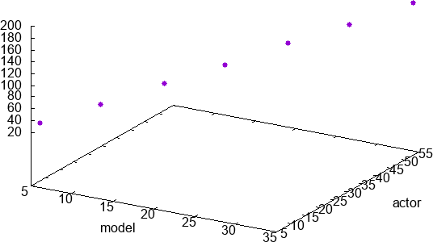
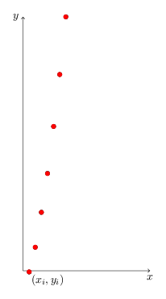
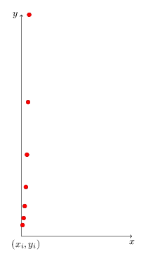

| models | actors | ms |
|---|---|---|
| 5 | 8 | 28.085 |
| 10 | 15 | 53.399 |
| 15 | 23 | 81.681 |
| 20 | 30 | 106.946 |
| 25 | 38 | 135.185 |
| 30 | 45 | 160.435 |
| 35 | 53 | 188.703 |
Say we are given the following framerate data. We’re looking to relate the number of actors and models in a particular setup with the resulting framerate. Our intuition tells us that the millisecond cost will be proportional to the number of actors and models we have. A quick inspection of these points plotted suggest that they appear to lie in a line.
Given that observation, we’re looking for an equation of the form \(b = s x_0 + t x_1\), where \(x_0\) is the number of models and \(x_1\) the number of actors. To find the coefficients \(s\) and \(t\) using the normal equations, first we’ll need to form our system of equations in matrix form.
We’ve augmented our \(A\) here with a column of ones, turning our modeling function into \(b = s x_0 + t x_1 + u\). This may not be necessary - it amounts to adding a y-intercept to our equation. If the y-intercept is 0 - if 0 actors and 0 models means a frame takes 0 ms to render - then \(u\) will be 0 and we haven’t hurt anything. If there is some sort of fixed cost though, \(u\) will capture it. It’s mostly harmless.
We express our equations in matrix form:
\(\begin{pmatrix} 5&8&1\\10&15&1\\15&23&1\\20&30&1\\25&38&1\\30&45&1\\35&53&1\\\end{pmatrix} \textbf{x} = \begin{pmatrix}28.085\\53.399\\81.681\\106.946\\135.185\\160.435\\188.703\\\end{pmatrix}\) \(\implies A\textbf{x} = \textbf{b}\)
Armed with A, we rearrange terms in the normal equations to give us \((A^TA)^{-1}A^T\):
\(\begin{pmatrix} -0.7714285714280663 & 0.9857142857136317 & -0.7571428571423645 & 0.9999999999993371 & -0.7428571428566592 & 1.0142857142850423 & -0.7285714285709538\\\ 0.4999999999996636 & -0.6666666666662298 & 0.49999999999966716 & -0.6666666666662227 & 0.49999999999968137 & -0.6666666666662227 & 0.49999999999968137\\\ 0.42857142857152286 & 0.6190476190474968 & 0.1428571428572355 & 0.3333333333332086 & -0.1428571428570492 & 0.04761904761892388 & -0.42857142857133745\\\ \end{pmatrix}\)
Multiplying through to \(\textbf{b}\) and taking three digits of precision we get \(\textbf{x}=\begin{pmatrix}0.89 \\ 2.97 \\ -0.13\end{pmatrix}\). So actors are twice as expensive as models according to our data.

Sometimes the best model for a set of data isn’t a linear function but a polynomial of higher order. Function approximation is a deep topic replete with interesting details but for the moment let’s see how well we can do with our humble least squares.
To the left is a set of data points that is definitely not linear. The general shape of the data is (half) parabolic, so we’re probably looking for a quadratic eqution as our model.
We construct \(A\) a bit differently in this case. We’re looking for a set of coefficients \(a\), \(b\), \(c\) to minimize the residual in \(s x^2 + t x + u = b\). So our system of equations in this case looks like:
\[s x_1^2 + t x_1 + u = b_1\]
\[\cdots\]
\[s x_n^2 + t x_n + u = b_2\]
Although these are quadratic equations, they are linear in the coefficients - because we’re actually looking for \(s\), \(t\), and \(u\), and that’s sufficient. Thus our matrix setup looks like
\[\begin{pmatrix} x_0^2 & x_0 & 1 \\ x_1^2 & x_1 & 1 \\ & \cdots & \\ x_n^2 & x_n & 1 \end{pmatrix} \begin{pmatrix} s \\ t \\ u \end{pmatrix} = \begin{pmatrix} b_1 \\ b_2 \\ \cdots \\ b_n \end{pmatrix}\]
We’re given the \(\textbf{x}\) values so \(A\) is trivial to construct.
Working through this example gives values of approximately \(s = 1.01\), \(t = 3.004\), \(u = -2.116\). This is relatively high error but given the noisiness of the data a reasonable fit.
| x | y |
|---|---|
| 0.5 | 5.049256664530498 |
| 1 | 8.182255633188568 |
| 1.5 | 13.563177467810174 |
| 2 | 22.14093239888445 |
| 2.5 | 36.64461491006822 |
| 3 | 60.24551100013749 |
| 3.5 | 99.49271499668747 |

As demonstrated in the last example, part of the unreasonable effectiveness of least squares is its applications to problems that are only linear in the coefficients, but not linear in the independent variables. We can often accomplish this with a change in variables.
Consider \(b = k e^x\). Before we try least squares approximation, we first have to transform it into a linear function. Taking the log of both sides:
\(\log b = \log (k e^x)\)
\(\log b = \log k + \log e^x\)
\(\log b = \log k + x\)
\(\log b = c + x\)
With \(c = \log k\), \(z = \log b\), our matrix thus stands:
\(\begin{pmatrix} x_0 & 1 \\ x_1 & 1 \\ & \cdots & \\ x_n & 1 \end{pmatrix} \begin{pmatrix} x \\ c \end{pmatrix} = \begin{pmatrix} z_1 \\ z_2 \\ \cdots \\ z_n \end{pmatrix}\)
Solving this system gives us \(c\) which we can exponentiate for our sought constant \(k\). Keep in mind though that we’re minimizing the linear error, not the error in the original problem. The fit will not be equally good over the domain. There are more sophisticated (that is, complicated) techniques for non-linear function approximation.